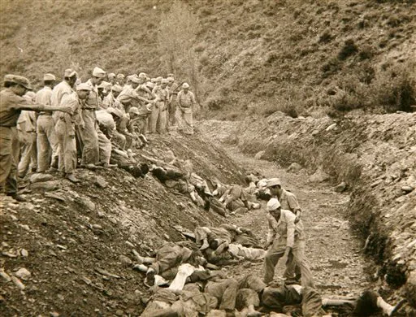
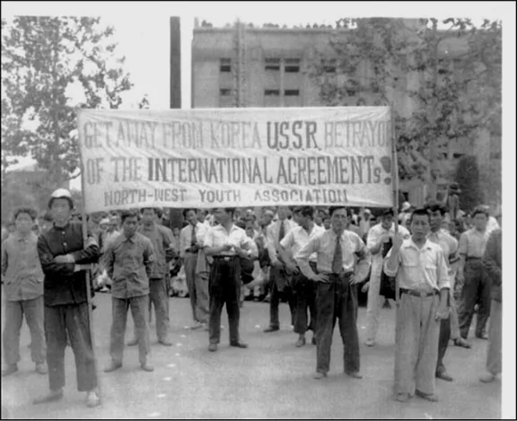
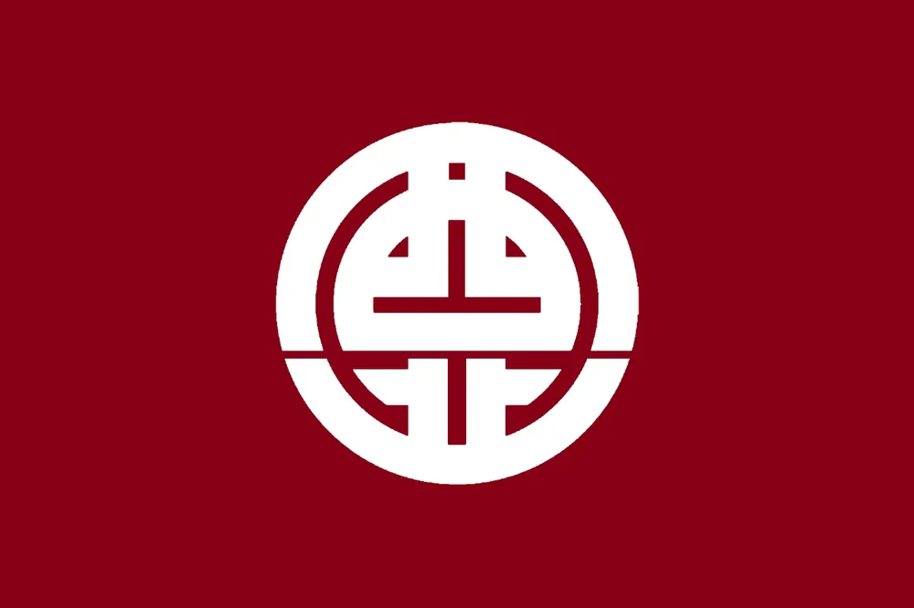
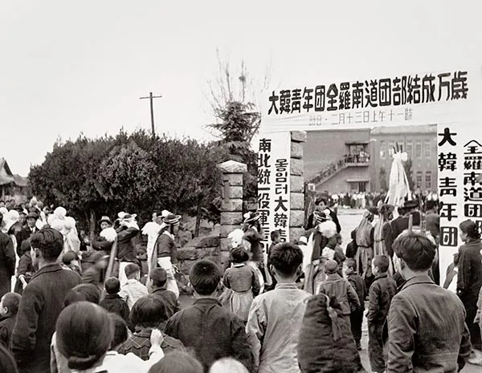
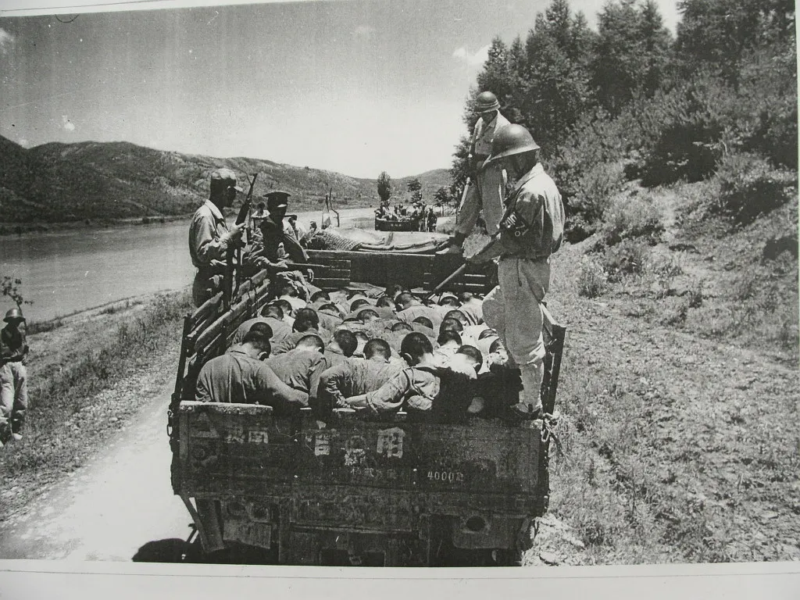

6.25 전쟁사를 공부하다 보면 보도연맹 학살사건도 필수적으로 나오며 가해주체가 국군, 경찰, '청년단체'인 사실을 배우게 됨.

그런데 '6.25 전쟁 당시' 학살을 밥먹듯이 저지른 단체를 '서북청년회'라 잘못 알고 있는 경우도 있는데....

엄밀히 따지면 6.25 당시 공식적으로 '서북청년회' 이름을 가진 단체는 없었음.

이는 1948년 12월 19일, 대동청년단을 중심으로
서북청년회, 대한독립청년단, 대한민족청년단 등을 흡수통합해
'대한청년단' 단체가 출범했기 때문임.

따라서 6.25 전쟁 당시 학살에 연루된 청년단체는 '대한청년단'이라 말하는게 정확함.
+
물론 서북청년회와 대한청년단의 만행을 생각하면.....
인민재판을 열고 주요 인사들을 납북했던 북괴놈들이랑 다를게 없는 단체라 생각됨 ㄹㅇ..
"마치 나치와 KKK를 합친 것 같다."
- 서북청년회를 본 미 군정청